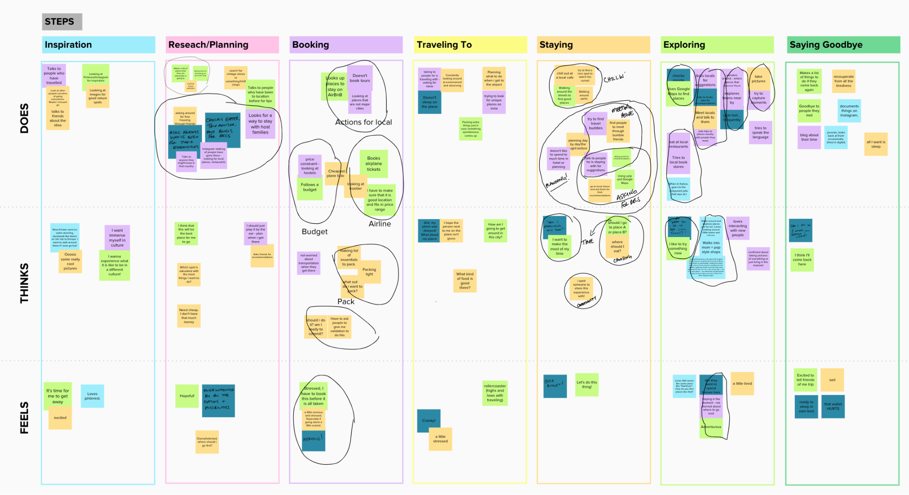
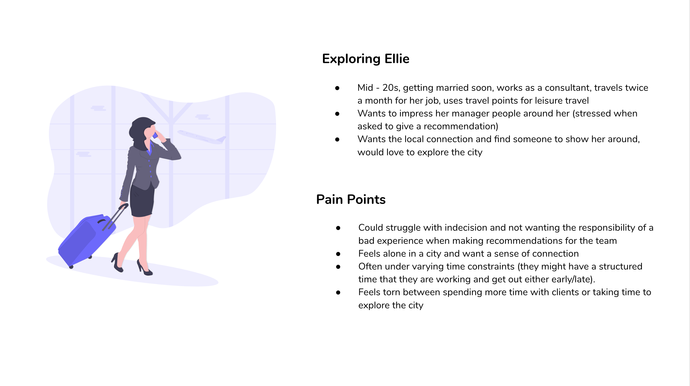
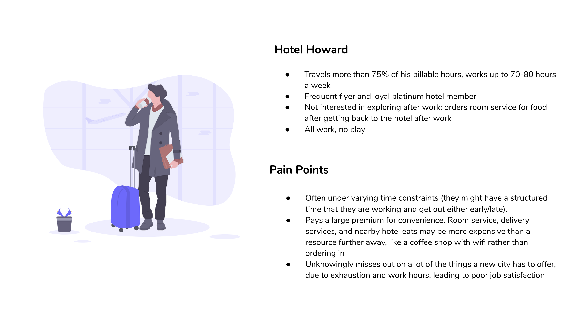
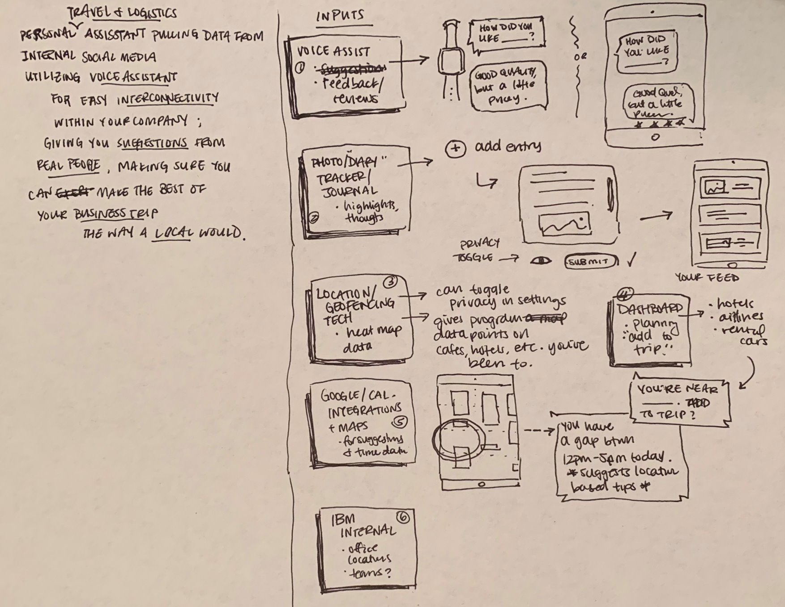
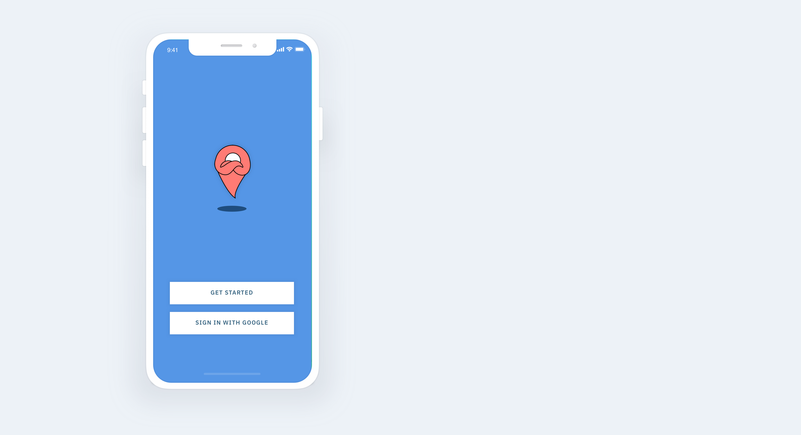
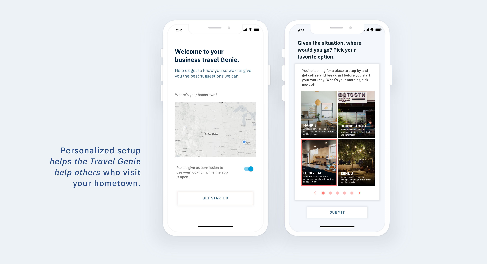
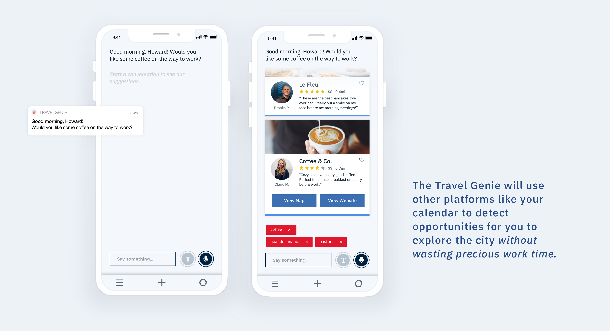
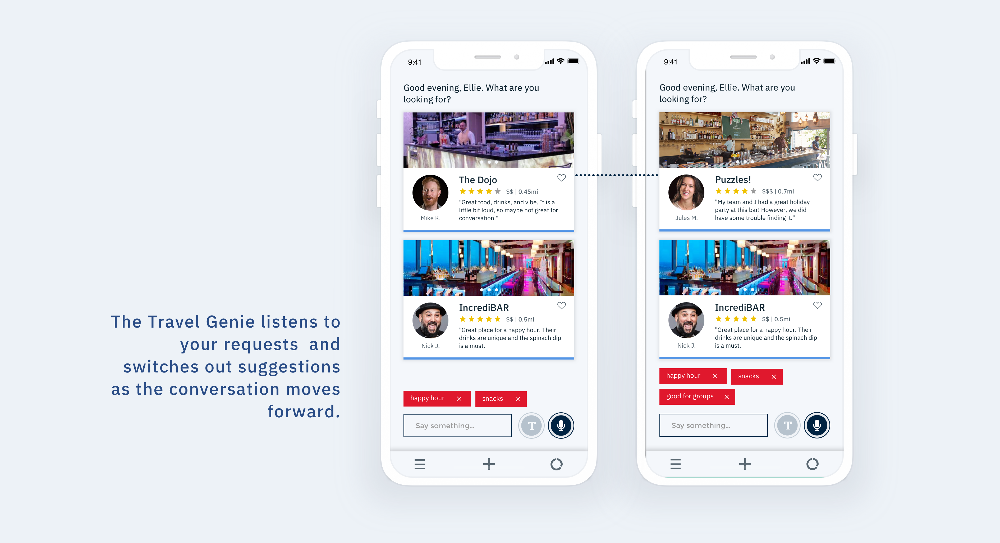
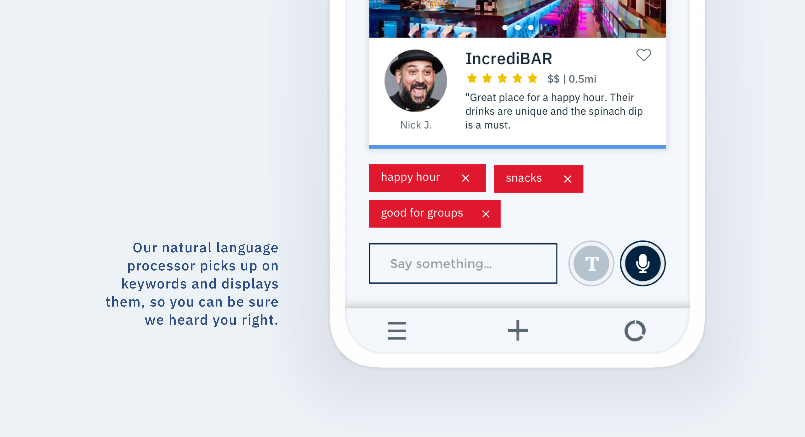
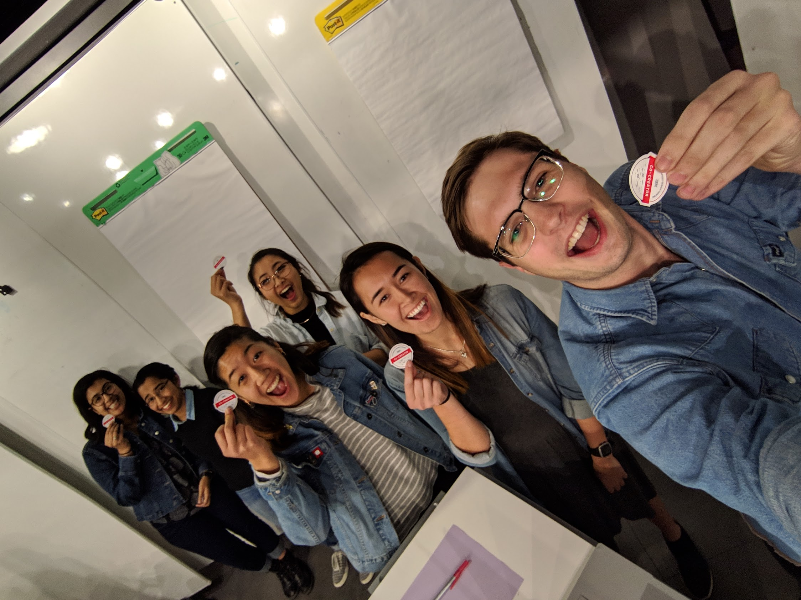

optimized business travel
Under the mentorship and expertise of IBM designers and engineers, our student team ideated a new use case for IBM Watson's natural language processor under the topic of travel.

With: Rebecca Chen, Namrata Gupta, Vincent Carson, Lisa Barson, and Anisha Oommen
Assignment focus: Improving travel using Watson’s natural language processor.
My roles: Design research, interaction design.
For IBM’s Center for Integrated Design course, we worked with IBM Watson designers to validate use cases for its AI natural language processors in the form of a design case study. We were tasked with the challenge of developing a travel assistant with this technology. Our project went through many pivots — especially since many of our team members (me included) weren't intially excited about the idea of using a natrual language processor as a travel assistant. It seemed mildly like overkill, but through our interview, synthesis, and validaing phases, we were able to come up with a solution we would be proud to present.
OUR BRIEF: “IBM Watson wants to find a way for its AI technology to assist travelers.”

To begin, we mapped out a couple of our assumptions from personal experiences with travel. Since we were students, a lot of our interviewees were also students, and we validated a lot of our assumptions about travel in general:
- while some are spontaneous, some are very uptight with logistics
- many travelers fear missing out on real, local experiences
- people trust personal suggestions over internet articles, etc.
- planning for a group is usually frustrating, and decision-making is a big pain point
We came up with 4 initial personas — go-with-the-flow, outdoorsy, relaxed, and uptight. We jumped the gun and began thinking about the improvements that AirBnb’s could use with the help of a voice assistant. Our research was all over the place. We realized we were designing for ourselves, and had no real, novel, value-add and no market niche to focus on.
Scoping down:
We decided that if we were going to get excited about this project, we had to narrow it down. We ended up with 12 interviewees, 5 of which happened to be corporate travelers. That’s when we realized, as we were synthesizing pain points, that corporate travelers have an abundance of unique needs and restrictions when it comes to traveling. If we design for this user, our solutions can potentially also apply to a broader audience. We knew if this was a solution a business traveler could get behind, it has to be incredibly efficient, usable, and valuable.
We came up with two personas:


So, what problem do we solve?
After we had the corporate traveler on our minds, we needed to come up with our final needs statements, and map out what our future state of business travel might look like. While we didn’t want to jump into solutioning just yet, we needed to understand which pain points to target as well as how to incorporate the natural language processor. We came up with the following needs statements:
Ellie needs a way to get great recommendations fast so that she doesn’t have to wrestle with indecision and can impress her coworkers
Ellie needs a way to connect with people in the city so that she feels like she is getting an authentic view of the city and doesn’t feel alone
Ellie needs a way to planning impromptu experiences around her work schedule so that she feels like she is maximizing her free time in an unfamiliar, new city.
Howard needs a way to find fast, convenient meals so that he doesn’t order in and miss out from a city’s local offerings
Howard’s employer needs a way to get Howard to explore the city so that Howard feels greater employee satisfaction and decrease dollars expensed on delivery fees and room service.
Corporate travelers need a lot of things. As someone who has traveled for business herself, I understand that there are frustrations with a business trip that are complex and inevitable — you’re busy, stressed, and away from home. We couldn’t possibly solve all of these problems, so we needed to come up with a final mission statement, or "hill" to overcome.
Who: A corporate traveler
What: can find a locally recommended place to eat
Value: within in 5 minutes
This is a pretty tall order, so at one of our draft presentations, we tried to solve all of them. We came up with features before we even came up with an app, which is why our app architecture turned out a little bit like this:  While we got a lot of positive feedback for our presentation, we were told that we needed to scope it down one more time. We should be thinking about what product to make before loading it with isolated features and content.
While we got a lot of positive feedback for our presentation, we were told that we needed to scope it down one more time. We should be thinking about what product to make before loading it with isolated features and content.
One last reframe:
One of us compared one of our features to the game of “20 questions”, and it seemed like everyone in the room had an epiphany moment. What if this app not only gave simple, easy, and personalized suggestions, but also almost gamified the travel planning process, with the fun of a guessing genie and the efficiency and ease of a limited back-and-forth conversation?
To test this out, we got together and played the roles out ourselves. A few of us would pretend to be the “guessing genie” that had to give a good, local suggestion for a place to eat, while the others would pretend to be the business traveler planning a client happy hour after work or grabbing a bagel on the way to work. (i.e., “What are you feeling for dinner today?” “Some Korean food would be nice.”, etc.)
We found a few things:
- The conversation really only took 3-5 back-and-forth’s, maximum
- Many of the questions we thought about asking could be done in the AI back-end. For example, instead of our “genie” asking how much time we have to eat or how far we were willing to travel, we could opt to connect to the user’s Google Calendar and email
- We absolutely needed to increase the usability of a voice assistant, since we were having trouble answering questions in person to our friends, much less a machine.
The final product:
So finally, we arrived at the Travel Genie.The Travel Genie utilizes IBM Watson’s natural language processor as well as connected data from other platforms and accounts in order to quickly and effectively help you make the best decision for what to do next.
The user must first answer questions about their hometown preferences, giving the Genie hints as to the user’s personality as well as determine which establishments are most liked by locals when other users come into town.
Then, the user may prompt the Genie with questions like: “Where can I grab coffee on the way to my meeting?”, or the Genie may alert the user when it spots a place nearby, like: “You’re passing a great Polish deli nearby that [another corporate traveler] has reviewed on a previous trip. Would you like to make a stop?”
Our intuitive UI is built in IBM’s Carbon Design language.
    We presented our solution to a room of IBM Watson researchers, designers, and sponsor users, and got these nifty IBM Enterprise Design Thinking Co-Creator badges!
Refelctions:
Through this long process, I learned that it's absolutely okay to pivot your project even a few months in. It's much better to grind out some overhauls then end up with a product you can't absolutely stand behind.Another big lesson was that designing for someone just like you isn't always the best use of personas. Since we were all college students who tend towards spontaneous traveling, so this planning assistant wouldn't have been our cup of tea. We had to reach out of our comfort zones to find the best project fit for the task at hand, and it turned out to be hugely popular among the IBM employees and UT Austin professors we presented it to.